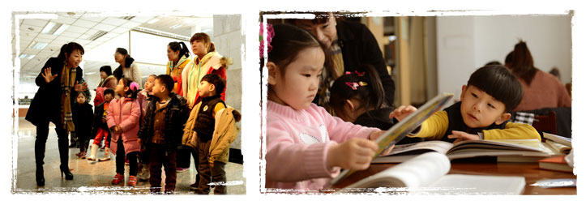

师大春天幼儿园的小朋友乘坐专车来到了沈阳市消防支队特勤大队二中队，进行了半日的参观、学习和体验活动。
孩子们聆听着消防队员讲解消防常识，仔细观察着展出的各种消防设施设备，学习穿戴正规的消防服装和头饰，感知认识各种消防车辆的颜色和形态；随后，孩子们又观看了救火救生实地演习，了解了消防队员灭火和救人的全过程；最后，孩子们在消防队员和老师的陪伴下搭乘云梯车，亲身体验身处云端的感受。孩子们的兴趣高涨，欢笑不断。
时间：2013年3月26日
在国际儿童读书日来临之际，师大春天幼儿园组织孩子们到沈阳师范大学图书馆进行参观。
在老师的带领下孩子们开始了知识殿堂之旅。他们认真聆听少儿图书馆工作人员的介绍，有序地参观了图书借阅、多媒体阅览、报刊阅览室、基藏图书借阅室、电子报刊阅读机；工作人员告诉孩子们如何查找图书、怎样借书及在阅览室看书的规则。在参观过程中，孩子们兴趣浓厚，非常安静。通过这次参观活动，既开阔了孩子们的视野，又增长了知识，同时也增强了阅读图书、获取知识的兴趣。
在国际儿童读书日来临之际，师大春天幼儿园组织孩子们到沈阳师范大学图书馆进行参观。
在老师的带领下孩子们开始了知识殿堂之旅。他们认真聆听少儿图书馆工作人员的介绍，有序地参观了图书借阅、多媒体阅览、报刊阅览室、基藏图书借阅室、电子报刊阅读机；工作人员告诉孩子们如何查找图书、怎样借书及在阅览室看书的规则。在参观过程中，孩子们兴趣浓厚，非常安静。通过这次参观活动，既开阔了孩子们的视野，又增长了知识，同时也增强了阅读图书、获取知识的兴趣。